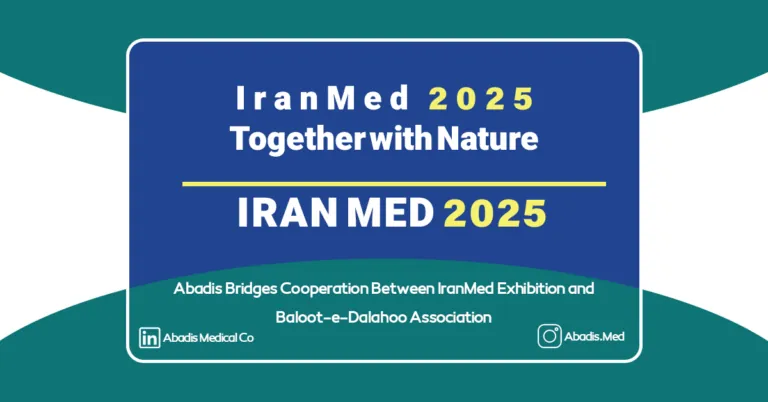
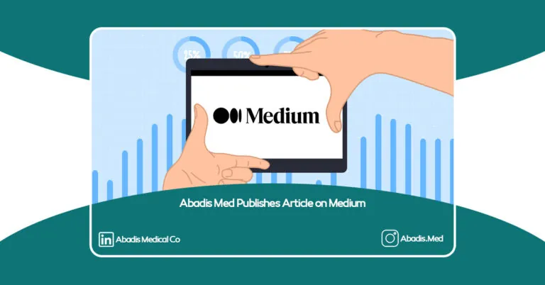
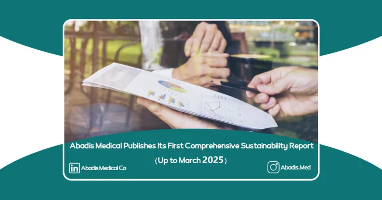
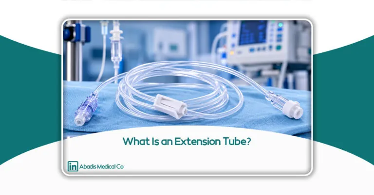
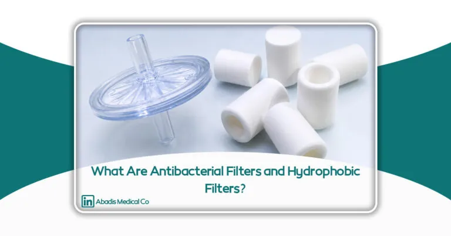
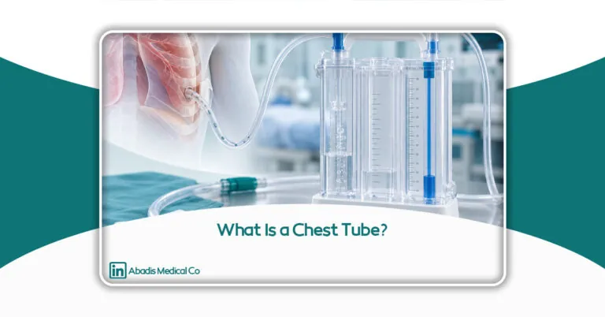

Abadis Med · a knowledge-based group
About us
Finally, after years of planning, dynamics and changes in the management system, in 2017, we established the Makhazen Tebi Abadis Company to start the production of Abadis disposable suction liner bags and to achieve our goals in the field of hospital infection control and medical equipment.

About us
Find out more on Abadis Med; a knowledge-based group
Abadis Med, a knowledge-based company, leverages cutting-edge technology and innovative solutions for managing hospital fluid waste and infectious waste. With a strong commitment to infection control and sustainable development, we strive to make a real impact on healthcare facilities and environmental protection.
Our Goals
- Optimized Management of Infectious and Hospital Liquid Waste
- Reducing and Controlling Infections Caused by Hospital Waste and Fluids
- Promoting Awareness and Maximizing the Use of Our Solutions in Hospitals and Healthcare Centers

Solutions & Products
From specialised suction products to innovative solutions for safer, more efficient care.
Products, solutions, applications and innovation — The solutions philosophy


We affect as much as a fingertipTo YouTo NatureTo World
Abadis Impact
These statistics represent Abadis's impact based on data from the company's MIS, BI, and AI systems. Water savings are estimated from eliminating the washing of suction canisters.
Abadis impact, right now
0 litres of water saved since 21 March 2026 (estimate)Why Abadis?
The added value obtained from the production of disposable suction liner bags
Closed suction system with a 99.99% antibacterial hydrophobic filter
Abadis disposable suction bags remove manual emptying and the washing of traditional canisters, break the chain of hospital-acquired infections (HAI) in the operating room and critical-care wards, and protect the central suction pump.
Established in 2018, the Abadis Medical Equipment Knowledge-Based Factory operates with state-of-the-art machinery and highly skilled experts. With an annual production capacity of 5 million disposable suction bags, Abadis is recognized as the largest manufacturer of these products in the Middle East.
- Product Warranty and Guarantee
- Quality Assurance
- Provide high quality products
- Communication of Sales and Technical Team with Medical Centers and Hospital
- Delivery Products in the Shortest Time
Articles & News

Human Capital Development at Abadis med Co.
View news
Abadis’ International Negotiations at Iran Health 2025
View news
Full interview with the CEO of Abadis on Radio Salamat’s program “Ta Soraya
View news
Abadis Bridges Cooperation Between IranMed Exhibition and Baloot-e-Dalahoo Association
View news
Abadis Med Publishes Article on Medium
View news
Abadis Medical Publishes Its First Comprehensive Sustainability Report (Up to March 2025)
View news
A Guide to Purchasing Disposable Suction Liner Bags for Healthcare Facilities
Find out more
What Is an Oropharyngeal Airway (OPA)?
Find out more
What Is a Nelaton Catheter?
Find out more
What Is an Extension Tube?
Find out more
What Are Antibacterial Filters and Hydrophobic Filters?
Find out more
What Is a Chest Tube?
Find out moreMemberships
Memberships


Customers
Customers
A selection of healthcare-centre logos, out of 1,284 active treatment centres.